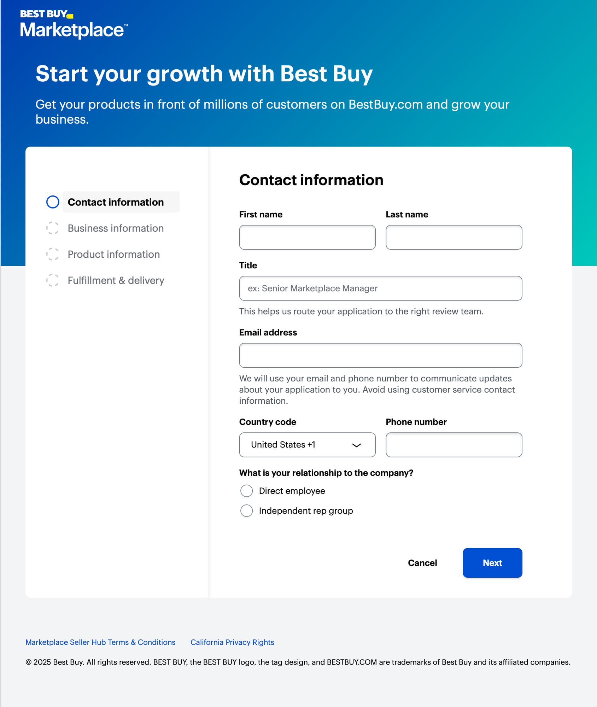

Steering Best Buy's seller experience
“It's all a game.” Feedback from marketplace sellers large and small was clear. They knew that in order to win, they had to play. That's why, when I took on rethinking the Best Buy Marketplace seller experience, I led through the perspective of game design. This approach allowed us to think of novel ways to motivate sellers to take actions that were good for customers and their businesses.
Overview of my direction to the team
- Understand Best Buy's target third-party seller. I wanted them to know what kind of companies we wanted on our platform.
- Explore design options that would best serve that target. The sellers we wanted to attract and retain had unique operational needs. We needed to find a way to serve them while thinking about how to scale for other segments.
- Evaluate and iterate with actual sellers. Best Buy hadn't done business-to-business experience research. I had to work with stakeholders to get us access to sellers so we could evaluate the solutions.
Initiating research
Best Buy is lucky enough to have dedicated researchers within Experience Design. While that's awesome and I love that team, it means we have to be thoughtful about giving our research partners time, clear briefs, and context.
We organized the discovery work into near- and far-future priorities, while keeping related initiatives and completed work visible. This gave the team a shared view of the opportunities across the seller experience.
Some leadership decisions I made during this phase:
- I gave direction on the broad research objectives
- I delegated additional objectives and study specifics to my employee and a research partner
- I completely trusted our research partners with the research methodology
Exploring options
We used an opportunity tree to connect the desired outcome—increasing the number of active sellers who maintain competitive offers—to the needs and problems sellers experience along the way.
The tree helped the team explore how to improve seller profitability, operational efficiency, and growth; help sellers get the right products in front of likely customers; and protect their businesses from fraud, counterfeit products, and unfair competition.

Project outcome
Senior leadership bought in completely to our vision. They saw the thinking and prototype and invested in a new engineering team to bring it to life.